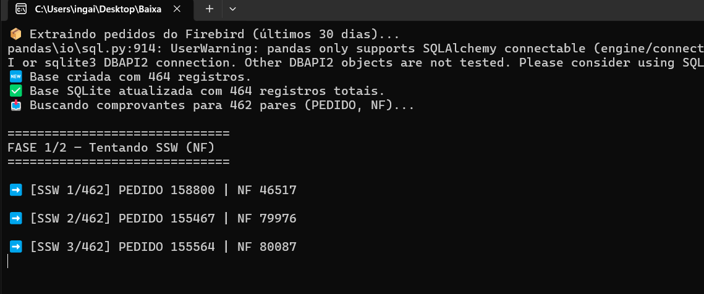
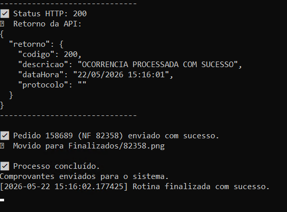
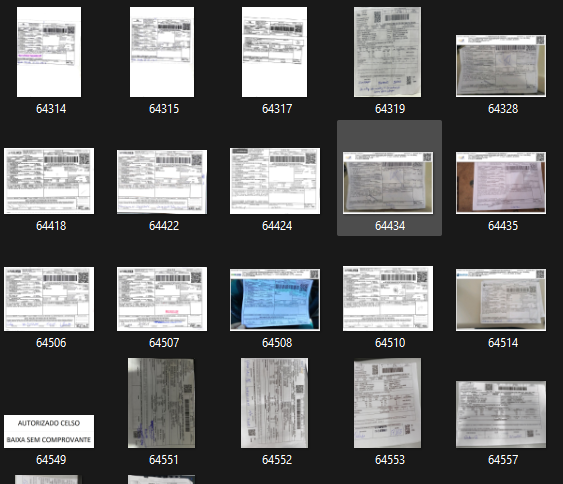

Busca notas com status EM TRÂNSITO diretamente na base do cliente.
Automação logística · Fleto
Bot de baixa automática de comprovantes.
Uma automação criada para consultar notas em trânsito diretamente na base de dados do cliente, buscar comprovantes no portal da transportadora e atualizar o sistema automaticamente quando a mercadoria é entregue.
case.status
Projeto
Baixa de comprovantes
Equipe → Bot
Uma rotina antes executada por uma equipe passou a ser conduzida automaticamente, com acompanhamento e manutenção preventiva.
Consulta o portal da transportadora para verificar entrega e localizar o comprovante.
Salva o comprovante e marca a nota como ENTREGUE no sistema do cliente.
O desafio
Uma rotina operacional crítica, repetitiva e dependente de acompanhamento manual.
O processo de baixa de comprovantes exigia que uma equipe consultasse notas, verificasse o status da entrega em portais de transportadoras, salvasse os arquivos corretos e atualizasse manualmente o sistema do cliente.
Por ser uma rotina recorrente e sensível para a operação logística, qualquer atraso ou falha impactava diretamente a visibilidade das entregas, o acompanhamento do setor responsável e a capacidade de antecipar problemas com transportadoras e clientes.
A solução
Um bot programado para assumir a rotina completa.
O bot foi desenvolvido para executar a rotina de ponta a ponta: identificar notas em trânsito, consultar a transportadora, verificar se a mercadoria foi entregue, salvar o comprovante e atualizar o sistema do cliente com o status correto.
A execução acontece de forma programada, nos horários definidos pelo cliente, garantindo que a operação comece o dia com as informações atualizadas e com menos trabalho operacional acumulado.
Fluxo automatizado
- Consulta notas em trânsito na base do cliente.
- Acessa o site da transportadora.
- Verifica se a mercadoria foi entregue.
- Baixa e salva o comprovante.
- Sobe o documento no sistema do cliente.
- Marca a nota como entregue.
Processo em execução
Da base de dados ao comprovante finalizado, tudo acontece em uma rotina automatizada.
As imagens abaixo mostram partes reais do funcionamento: extração de pedidos, processamento no terminal, envio para o sistema do cliente e armazenamento dos comprovantes já baixados.
01 · Extração da base
O bot inicia consultando a base do cliente.
A rotina começa extraindo os pedidos dos últimos dias e identificando quais notas ainda estão com status de acompanhamento. A partir disso, o bot prepara a base local e organiza os pares de pedido e nota fiscal que serão consultados.

02 · Processamento e baixa
Quando a entrega é confirmada, o comprovante é enviado ao sistema.
Após localizar o comprovante no portal da transportadora, o bot envia o arquivo para o sistema do cliente, valida o retorno da API e registra a nota como entregue. O processo é concluído com logs de sucesso para acompanhamento e manutenção.

03 · Volume operacional
Milhares de comprovantes organizados sem operação manual diária.
Os comprovantes baixados são salvos, organizados e movidos para a pasta de finalizados. Essa etapa mostra o impacto real da automação: uma rotina que antes dependia de equipe passa a ser executada de forma programada e rastreável.

Resultado
A equipe deixou de executar a rotina manualmente e passou a atuar de forma mais estratégica.
Em pouco tempo, o bot dominou a função operacional que antes dependia de uma equipe. Hoje, a atuação humana fica concentrada no acompanhamento, qualidade da entrega e antecipação de possíveis problemas com transportadoras e clientes.
Redução de tarefas repetitivas e operacionais.
Notas atualizadas com comprovantes e status correto.
Execuções automáticas nos horários solicitados pelo cliente.
Equipe liberada para tratar exceções e melhorar a entrega.
Projeto parecido?
Sua empresa ainda depende de alguém repetindo a mesma rotina todos os dias?
Esse tipo de processo pode ser mapeado, automatizado e transformado em uma solução sob medida para sua operação.